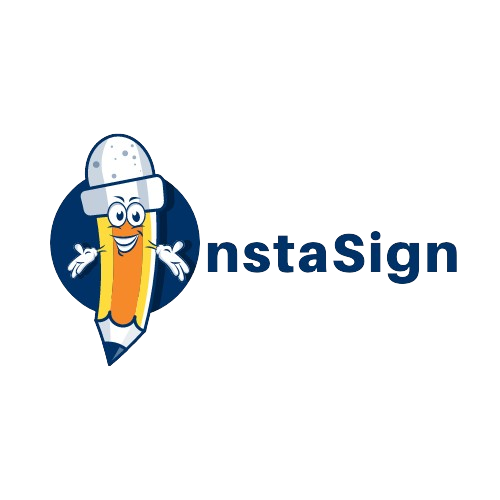

f<!DOCTYPE html>
<html lang="en">
<head>
    <meta charset="UTF-8">
    <meta name="viewport" content="width=device-width, initial-scale=1.0">
    <title>InstaSign</title>

    <!-- Style CSS -->
    <link rel="stylesheet" href="./sign.css">
</head>
<body>

    <div class="main">
        <div class="header">

            
        </div>

        <div class="container">
            <canvas id="signature-pad" width="400" height="200"></canvas>

            <div>
                <button id="clear-button">Clear</button>
                <button id="cursor-button">Change Cursor</button>
                <button id="download-button">Download</button>
                <button id="bg-button">Bg Color</button>
                <button id="bg-button">Bg Color</button>
            </div>
        </div>
        <script>
            document.addEventListener('DOMContentLoaded', function () {
                var canvas = document.getElementById('signature-pad');
                var ctx = canvas.getContext('2d');
                var drawing = false;
                var strokes = [];
                var cursorColor = 'red'; // Default cursor color
                var bgColor = 'white'; // Default background color

                // Set initial background color
                canvas.style.backgroundColor = bgColor;

                canvas.addEventListener('mousedown', function (e) {
                    drawing = true;
                    ctx.beginPath();
                    ctx.moveTo(e.clientX - canvas.getBoundingClientRect().left, e.clientY - canvas.getBoundingClientRect().top);
                });

                canvas.addEventListener('mousemove', function (e) {
                    if (drawing) {
                        ctx.strokeStyle = cursorColor; // Set cursor color
                        ctx.lineTo(e.clientX - canvas.getBoundingClientRect().left, e.clientY - canvas.getBoundingClientRect().top);
                        ctx.stroke();
                    }
                });

                canvas.addEventListener('mouseup', function () {
                    if (drawing) {
                        drawing = false;
                        strokes.push(ctx.getImageData(0, 0, canvas.width, canvas.height));
                    }
                });

                document.getElementById('clear-button').addEventListener('click', function () {
                    ctx.clearRect(0, 0, canvas.width, canvas.height);
                    strokes = [];
                    // Reapply the background color after clearing the canvas
                    canvas.style.backgroundColor = bgColor;
                });

                document.getElementById('cursor-button').addEventListener('click', function () {
                    var cursorColorPicker = document.createElement('input');
                    cursorColorPicker.type = 'color';
                    cursorColorPicker.addEventListener('input', function (e) {
                        cursorColor = e.target.value; // Update cursor color
                    });
                    cursorColorPicker.click();
                });

                document.getElementById('bg-button').addEventListener('click', function () {
                    var bgColorPicker = document.createElement('input');
                    bgColorPicker.type = 'color';
                    bgColorPicker.addEventListener('input', function (e) {
                        bgColor = e.target.value; // Update background color
                        canvas.style.backgroundColor = bgColor; // Apply background color to canvas
                    });
                    bgColorPicker.click();
                });

                document.getElementById('download-button').addEventListener('click', function () {
                    // Create an offscreen canvas to combine the background and strokes
                    var offscreenCanvas = document.createElement('canvas');
                    var offscreenCtx = offscreenCanvas.getContext('2d');
                    offscreenCanvas.width = canvas.width;
                    offscreenCanvas.height = canvas.height;

                    // Draw the background color
                    offscreenCtx.fillStyle = bgColor; // Set background color
                    offscreenCtx.fillRect(0, 0, offscreenCanvas.width, offscreenCanvas.height);

                    // Draw all the strokes
                    strokes.forEach(function (stroke) {
                        offscreenCtx.putImageData(stroke, 0, 0);
                    });

                    // Get the data URL of the offscreen canvas with the background color
                    var dataURL = offscreenCanvas.toDataURL("image/png");

                    // Create a link element to trigger the download
                    var link = document.createElement('a');
                    link.href = dataURL;
                    link.download = 'signature.png';
                    document.body.appendChild(link);
                    link.click();
                    document.body.removeChild(link); // Clean up by removing the link
                });
            });
        </script>
    </body>
    </html>
